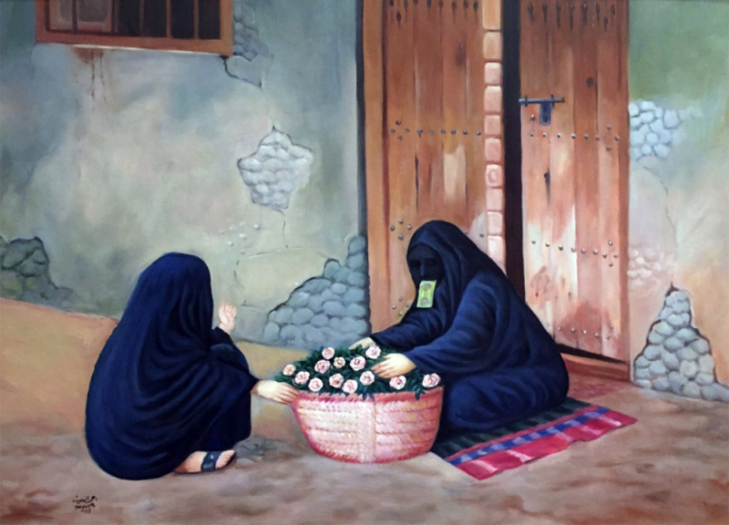
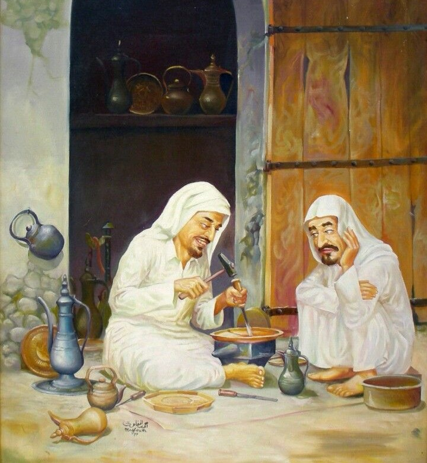

من مواليد مدينة المبرز بالاحساء عام 1370 هـ حاصل على بكالوريوس تاريخ من جامعة الملك عبد العزيز ودراسات خاصه في التكنيك اللوني والتصميم
بدأ بممارسة الفن منذ الصغر من خلال موهبته
وشارك في مختلف المعارض المدرسيه وفي أول معرض جماعي اقامته كلية البترول والمعادن (جامعة الملك فهد حاليا)
وقدم للملك فيصل لوحة شخصيه بروتريه عند افتتاحه لمشروع الري والصرف عام 1991 وقدم أيضاً الملك خالد لوحة شخصيه عند افتتاحه لجامعة الملك فيصل بالاحساء عام 1996
بعدها شارك في مختلف المعارض الجماعيه التي اقامتها رعاية الشباب بالاحساء ومعارض جمعية الثقافة والفنون بالاحساء والشرقيه والرياض.
شارك في أول معرض لفناني المملكة عام 1996 ومعارض الاسابيع الثقافية في استكهولم بالسويد ومعارض الاسابيع الثقافية بالجزائر
وأول معرض للحروفيين وفي المعرض الثلاثي المتنقل وفي معرض السعودية والكويت بالخفجي وشارك في معارض السعودية.
شارك في معرض المسابقة الدنماركيه عام 1407هـ وحصل على الجوائز الثلاث.
عُرضت اعماله في معارض الجائزة الكبرى بموناكو وشارك في معرض الفن ببغداد ومعارض النخبه الدولية في باريس وميامي عام 1998 م1999م
وشارك في معارض الفن السعودي المعاصر ومعارض المقتنيات منذ بدايه انطلاقتها.
وشارك في معرض الانتفاضة واصدقاء المرضى والمعوقين المخصصه لدعمهم خيريًا وعُرضت اعماله في معارض دوليه اقيمت بجامعة السربون الفرنسية وجامعة يوتا الإمريكية وميامي والصين.
وتوجد لوحاته في بعض المتاحف والغاليريهات العالمية مثل متحف يويو يانغ بتايبيه وهورايزن الأمريكي والمركز الثقافي بالإمارات
ومتحف ديانا ومتحف عبد الرؤف خليل بجده إضافة إلى متاحف خاصه في ليبيا والولايات المتحدة الأمريكية وغاليري سبسيا دلفا الأمريكي وغاليري هاتيوفيل الفرنسي.
ويفتخر بأن اعماله موجوده لدى العديد من القادة العرب وكبار المسؤلين ورجال الاعمال في المملكة والخليج وبعض الدول العربية ويملك مستشفى ارامكو بالاحساء العديد من اعماله
وفندق الاحساء الانتركونتيننتال ومستشفى الاحساء وبعض الادارات الحكومية.
إن أعجبتك إحدى هذه الرسومات - بإمكانك اختيار إحداها وتحديد مُنتج لطباعة الرسمة عليـه عن طريق متجرنا الإلكتروني
اِضغط على
 بجانب الرسمة المُراد طباعتها للإنتقال إلى
نموذج تعبئة الطلب
بجانب الرسمة المُراد طباعتها للإنتقال إلى
نموذج تعبئة الطلب